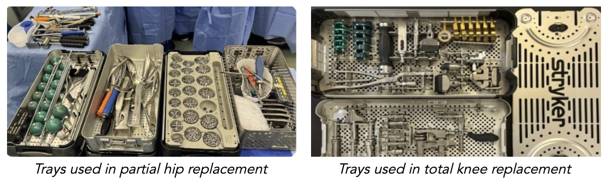
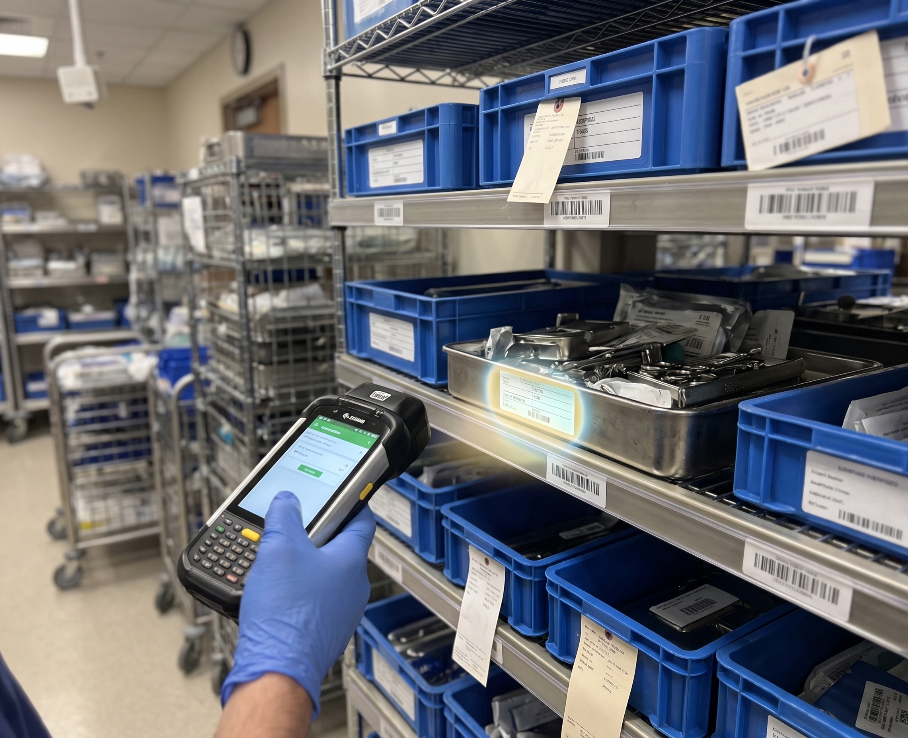

Orthomatic (EIM-435)
Improving Orthopaedic Instrument Tray Identification and Retrieval
Table of Contents
Abstract
Orthopaedic surgeries require specialised instruments organised into trays, which must be prepared before each operation. However, trays may be stored in different locations, moved between operating theatres or still undergoing sterilisation. Their similar appearances also make identification difficult, leading nurses to spend additional time searching or confirming tray locations.
Through clinical observations, stakeholder interviews and surveys, our team identified a key problem: limited visibility of orthopaedic instrument tray location and availability during preoperative preparation.
Orthomatic aims to address this uncertainty through improved tray identification, location tracking and retrieval guidance, with a target search time of no more than 3 minutes per tray.
This semester, we identified design requirements, evaluated possible solutions and conducted initial technical and user-interface tests. These findings will guide the development of an integrated prototype in the next stage.
1. Clinical Background and Problem Context
1.1 Orthopaedic Instrument Trays

Each tray may contain many instruments and can be heavy, making handling and retrieval physically demanding. The number of trays required also varies between procedures.
Vendor trays are either consignment sets stored in hospitals or warehouse sets delivered when required. These trays may be shared between hospitals, adding complexity to their availability and preparation.
Overall, this results in a complex preparation process, especially since multiple surgeries are scheduled back to back within the same day. Any delays or breaks in the workflow may cause consequences such as postponement of surgeries and in the worst case, compromise of patient safety.
1.2 Stakeholders Involved in Tray Preparation

Orthopaedic tray preparation involves several stakeholders, including surgeons, vendors, TSSU staff and OT nurses. Preliminary interviews showed that surgeons select instruments and implants based on clinical needs and vendor preferences. Vendor representatives may also provide support during surgery, particularly for complex procedures.
As trays move between different stages of preparation, these groups must coordinate to ensure the required instruments are ready for surgery. However, information is often shared separately, making it difficult for nurses to confirm tray locations and availability
1.3 Understanding the Problem Through Clinical Research

After listening to the issues in this workflow from the perspective of our clinical mentors, we talked to more surgeons, from different hospitals and countries, to understand their experiences. Then we zoomed out to understand the concerns of all the stakeholders involved in the tray preparation process.
We carried out interviews, hospital visits, procedure observations, nurse shadowing and sent out a survey. Our interim presentation records 23 stakeholder interviews involving nurses, surgeons, residents, hospital staff and vendors. We also observed five procedures, visited TSSU facilities at SGH and Woodlands Hospital, and collected 30 nurse survey responses. These helped us understand both the overall preparation process and the difficulties faced by nurses [Annex A].

This figure illustrates the overall instrument tray preparation workflow. As trays move between these stages, their locations and availability may change. However, information about these movements is not always readily available to nurses.

During our hospital visits, we observed trays stored in OT rooms, OT corridors and storage areas in TSSU. Some trays were stacked on racks or trolleys, while others were placed in temporary storage locations. In the OT, these trays are sometimes organised by vendor, but due to space limitations, most trays are placed randomly, wherever there is space. After sterilisation, trays can also be temporarily stored in carts in the TSSU, before being transported up to the OT.

We also observed handwritten lists and notes being used to communicate which trays were required or had already been prepared. Nurses must write out all the trays they need to prepare for each surgery, check each storage area for the required tray, and transport these trays together to their respective OTs. As each tray is wrapped in layers of sterile wrapper, they look very similar, leaving the nurses to rely on reading each tray label individually.
1.4 Findings from Nurses
As OT nurses carry much of the responsibility for tray preparation, we conducted nurse shadowing and surveys to understand their difficulties.
Four recurring problems emerged. First, trays may be moved or stored in unexpected locations. Second, similar-looking trays and inconsistent labels make identification difficult. Third, nurses may not know whether trays are undergoing sterilisation, being used or awaiting delivery. Finally, nurses often need to contact TSSU staff, vendors or colleagues to confirm tray locations and availability.
These findings suggest that the main difficulty is not always a missing tray, but the lack of reliable information about its current location and status.
2. Problem Identification and Prioritisation
2.1 Root Cause Analysis
We dug deeper and conducted a root cause analysis to identify key factors contributing to long tray preparation times.

2.2 Problem Prioritisation
We used a problem prioritisation matrix to compare different areas of intervention.
Our matrix considered time impact, technical feasibility and ease of implementation, weighted at 40%, 35% and 25%, respectively. Time impact refers to the amount of time that could be cut by solving the issue, technical feasibility is how easily the problem could be tackled through technology and ease of implementation refers to how easily the stakeholders involved could be convinced to adopt a solution into their workflow.
| Problem area | Time impact (40%) | Technical feasibility (35%) | Ease of implementation (25%) | Weighted score |
|---|---|---|---|---|
| Surgeon-centred decision-making | 3 | 1 | 1 | 1.80 |
| Manual workflow | 5 | 4 | 3 | 4.25 |
| Limited storage (infrastructure) | 3 | 3 | 2 | 2.85 |
| Too many tray varieties | 5 | 1 | 1 | 2.60 |
| Tray design | 3 | 2 | 1 | 2.25 |
Manual workflow received the highest weighted score of 4.25, suggesting that it has a significant impact on preparation time and is relatively feasible to improve. Other problem areas received lower scores due to their limited feasibility or ease of implementation.
The key issues manual workflow contributes to is uncertainty about tray location and availability. This uncertainty arises from several factors, including similar-looking trays, inconsistent labelling, unknown tray movements and delayed communication between stakeholders. Furthermore, trays may be present in the hospital but unavailable because they are still undergoing sterilisation or being used in another procedure.
Therefore, our project was refined to focus on improving the visibility of tray location and availability.
2.3 Refined Problem Statement
OT nurses face uncertainty about the location and availability of orthopaedic instrument trays during preoperative preparation, leading to additional searching, repeated communication and time spent gathering the required instruments.
2.4 Needs Statement
Our revised needs statement is:
A seamless, reliable way to identify and retrieve surgical instrument trays during preoperative preparation, such that search time is no more than 3 minutes per tray, so hospital staff can dedicate more time for patient care.
Before reaching this statement, we clarified the tray-preparation workflow, where the solution should fit, and what it can realistically improve. Our project focuses on improving tray identification and retrieval. Nurses often retrieve familiar trays quickly from memory, so the goal is to prevent corner cases where a routine 3-4 minute retrieval turns into a search lasting up to 30 minutes for a singular tray [Annex D].
3. Value Proposition and Design Requirements
3.1 Value Proposition
Our proposed value lies in combining tray identification, location information and physical retrieval guidance into a workflow designed around the needs of OT nurses. Rather than replacing existing hospital systems, Orthomatic aims to seamlessly integrate into the current workflow to support the specific task of identifying and retrieving the correct instrument tray.
The intended benefits include reduced search time, fewer unnecessary movements between storage areas, and less repeated communication. However, these benefits will need to be demonstrated through full-system testing.
3.2 Existing Solutions
Current methods include handwritten preparation lists, calls and messages between stakeholders, and barcode tracking. However, existing barcode systems mainly support sterilisation tracking and billing rather than providing live tray locations.
SGH has also introduced a dedicated consignment team to retrieve trays, although this requires additional manpower (Annex A).
Our analysis identified an opportunity for a solution that provides updated tray locations, reduces search time and physical effort, and fits into existing hospital workflows without compromising safety.
3.3 Design Requirements
Based on our clinical research, we identified the following needs criteria.
Must Have
| S/N | Category | Criteria | Rationale |
|---|---|---|---|
| 1 | Safety | Must maintain compatibility with existing surgical tray sterilisation processes without compromising sterility | Any modifications to surgical trays must preserve existing sterilisation standards to ensure patient safety |
| 2 | Efficiency | Must enable users to locate a required surgical tray within 3 minutes | If the location of a tray is known, nurses currently take about 3–5 minutes to locate it. We want to make all corner cases where nurses struggle for 30 minutes to locate one tray meet at least this standard |
| 3 | Learning Curve | Must enable new users to independently locate surgical trays using the system within 1 month | Consignment team nurses currently require approximately 1–3 months to familiarise themselves with tray names and locations |
Good-to-Have
| S/N | Category | Criteria | Rationale |
|---|---|---|---|
| 1 | Sustainability | Solution is reusable rather than one-off | Could reduce long-term cost and unnecessary waste |
| 2 | Efficiency | Reduces double checking by nurses | Nurses spend extra time double checking the cases prepared by previous shifts due to the high possibility of human error |
| 3 | Efficacy | Ability to track individual instruments | When instruments go missing or are dropped during surgery, nurses can easily track the location of another tray with the instrument without expert knowledge of tray contents in case of emergency |
These targets will be a guide for future testing and could be refined depending on feedback along the way.
4. Concept Generation and Selection
4.1 Brainstorming and Concept Exploration
We used SCAMPER, BruteThink and the ACE framework to explore possible solutions without committing to one approach too early [Annex B].
We organised the proposed system into five functions. The morphological chart shows the technologies considered for each function, allowing us to compare different system configurations.

For each function, we considered several possible technologies. For example, tray identification could be done by UHF RFID, NFC, BLE tags or barcodes. Location detection could involve fixed readers, handheld searching or cameras. Guidance could be provided through shelf lights, sound or proximity feedback.
This approach allowed us to explore different combinations before selecting a lead concept.
4.2 Concept A: Smart Shelf
The Smart Shelf is a storage system designed to identify trays, record their locations and guide nurses to the correct shelf position.

In the proposed workflow, a nurse selects a required tray using a mobile application. The system checks its recorded location and displays the relevant storage area. A shelf indicator then highlights the intended tray position, allowing the nurse to locate and retrieve it. The system would also need a way to verify retrieval and update the recorded tray location when trays are moved.
Possible components include identification tags, readers or cameras, slot sensors, a shelf controller, LED indicators and a backend database.The exact combination of technologies remains under investigation.
4.3 Concept B: Handheld Finder
The Handheld Finder is a portable device that nurses could use to search for tagged trays.

For example, a handheld reader could detect nearby trays and provide feedback to guide the nurse towards the required set. This approach may be useful when trays are stored in temporary locations or outside fixed shelves. However, it would require nurses to carry and operate an additional device.
4.4 Concept Evaluation
The nurses we interviewed preferred the Smart Shelf because illuminated indicators could guide them directly to the required tray. However, they highlighted the need to support multiple users and update locations when trays are moved.
The Handheld Finder raised concerns about collecting and operating an additional device. Based on this feedback and our concept evaluation, we selected the Smart Shelf for further development.
To reduce infrastructure changes and costs, we refined it into a retrofit system that can be attached to existing shelves. Its suitability will depend on further technical testing.
4.5 Retrofit Smart Shelf Locator

The proposed Retrofit Smart Shelf Locator combines tray identification, shelf sensors, LED indicators and a mobile application to help nurses locate required trays. A backend system links tray IDs to their recorded shelf locations, allowing nurses to search for trays and receive visual guidance during retrieval.
5. Initial Prototype Development and Testing
We began prototyping by investigating individual functions rather than building the entire system together. This allowed us to test important technical questions before deciding which components should be integrated into the Smart Shelf.
5.1 Barcode Testing: Lighting Conditions
We first did testing on barcodes as they are an existing tray identification method used by hospitals. Our first experiment investigated whether lighting conditions affect successful tray identification. If they cannot be reliably detected under typical storage lighting, additional lighting or a different identification method may be needed.
We placed a barcode at a fixed scanning distance of 30 cm and tested four measured illuminance levels: 53, 150, 430 and 3,000 lux.
| Illuminance | Distance | Detected |
|---|---|---|
| 53 lux | 30 cm | Yes |
| 150 lux | 30 cm | Yes |
| 430 lux | 30 cm | Yes |
| 3000 lux | 30 cm | Yes |
Barcode detection was successful under all four conditions. As OT brightness is around 1000 lux (Thorlux Lighting, n.d), this suggests that lighting will not prevent identification within the tested range.
However, our experiment had several limitations. We did not conduct enough repeated trials to establish detection reliability, and the test did not fully reproduce the different lighting warmths and direct glare of actual barcode stickers.
Our next iteration will therefore use more representative materials and setting, while measuring scanning success and time across repeated trials.
5.2 Barcode Testing: Scanning Coverage
Our second barcode experiment investigated whether a fixed camera could identify barcodes positioned at different locations. One possible Smart Shelf configuration uses a fixed camera positioned opposite the storage shelf so barcodes will need to be able to be scanned at different distances and positions.
We used a 30 cm reference distance and tested barcode orientations of 90°, 60° and 45° at lateral offsets of 15, 45 and 60 cm.
| Angle | 15 cm Offset | 45 cm Offset | 60 cm Offset |
|---|---|---|---|
| 90° | Yes | No | No |
| 60° | Yes | No | No |
| 45° | Yes | No | No |
Scanning was successful at a 15 cm lateral offset but unsuccessful at 45 cm and 60 cm across all three tested barcode orientations.
Assuming a fixed perpendicular camera-to-shelf distance of 30 cm, these offsets correspond to off-axis viewing angles of approximately 26.6°, 56.3° and 63.4°, respectively: \(\theta = \tan^{-1}\left(\frac{x}{30}\right)\)
Larger offsets increase the viewing angle and distance to the barcode, which may reduce its apparent size and readability. These results suggest that a single fixed camera may not provide sufficient barcode-reading coverage across a wide shelf. However, the experiment did not isolate the effects of viewing angle, distance and camera field of view. Further testing at smaller offset intervals is required to determine the effective scanning range and whether multiple cameras would be necessary.
The next iteration will investigate smaller offset intervals, different camera placements and the effect of multiple trays appearing within the same image to help us determine whether fixed-camera identification is practical for a full storage shelf.
5.3 NFC Testing: Moving Tray Identification
Next, we investigated NFC as another possible identification method. NFCs can be passive and read by a compatible reader at close range (STMicroelectronics, n.d.) . Our experiment focused on whether NFCs could be read during movement. We moved an NFC tag across a reader at different speeds.
| Trial | Speed | Detected |
|---|---|---|
| 1 | 2.73 cm/s | Yes |
| 2 | 3.61 cm/s | Yes |
| 3 | 6.21 cm/s | No |
| Nurse handling estimate | 23.25 cm/s | No |
Successful detection was observed at calculated speeds of 2.73 cm/s and 3.61 cm/s, while detection was unsuccessful at 6.21 cm/s. We also recorded an estimated nursing tray-sliding speed of 23.25 cm/s.
These results suggest that an NFC arrangement for automatic identification might require a larger reader range. However, the findings are limited to the tested tag, reader and setup. Further trials are required before drawing conclusions about NFC performance more generally.
We also explored whether nearby NFC tags could be distinguished individually. During preliminary testing, with NFC tags being side by side, slightly tilting the phone towards the intended tag appeared to help identify it. This suggests that reader orientation may affect selective detection.
5.4 Technical Findings and Design Implications
Our initial experiments revealed different limitations. Barcode identification worked across the tested lighting conditions but became unsuccessful at larger lateral offsets. NFC supported close-range differentiated identification but showed limitations in terms of ease of readability.
These findings helped us identify questions that must be answered before selecting the final identification technology.
We plan to investigate passive UHF RFID because it may allow multiple tags to be identified and without individual close range scanning. However, metal interference, tag spacing and exact shelf localisation remain important challenges, and we will therefore focus on whether UHF RFID can reliably distinguish individual metal trays and associate each tray with the correct shelf position.
6. User Interface Development and Feedback
We focussed on two features that we felt were the most crucial, how to initiate searching for trays on the app as well as guidance to the trays. We tested Prototypes 1 and 2 through in-depth conversations with 3 nurses and 1 vendor.
6.1.1 Prototype 1: Entering Required Trays
We developed three initial user interface options to explore how nurses could create a digital checklist of the trays required for each surgery. Option A allowed vendors to enter the required trays before preparation. Option B allowed nurses to photograph a handwritten list and have the system extract the tray names. Option C allowed nurses to search for tray names and select from suggested matches.

These options were presented to nurses to gather feedback on their usefulness and suitability for the existing workflow. Nurses generally preferred option A as it allowed them to view the required trays directly from vendors. They pointed out that more than one vendor could be involved in a case, highlighting the requirement for shared access. Additionally, they highlighted the importance of including details such as the vendor, procedure, OT room and surgery time.
Overall, the feedback suggested that the interface should be a shared platform between nurses and vendors, while providing clear information about tray requirements.
6.1.2 Prototype 2: Entering Required Trays
Based on Prototype 1 feedback, we developed three revised approaches: Shared Vendor Entry, Scan-and-Edit and Screenshot Import. The latter two aim to reduce manual data entry while allowing nurses to review the extracted information.

Nurses continued to prefer Shared Vendor Entry, but further discussions revealed that tray availability was equally important. Trays may be undergoing sterilisation, used in another operation or awaiting delivery.
This highlighted the need to involve TSSU staff in providing status updates. Future iterations will explore shared access, responsibility for updating information and case tracking without patient-identifiable data.
6.2.1 Prototype 1: Retrieval Guidance
We also explored three guidance methods. Option A displayed directional arrows over a camera view to guide nurses towards the tray. Option B showed the direction and approximate distance to the tray. Option C described and displayed the room and shelf where the tray was recorded.

These options were presented to nurses to understand which method would be most intuitive and useful during tray retrieval.
Feedback suggested that camera-based navigation could be particularly helpful for junior nurses who are unfamiliar with the storage layout. In contrast, experienced nurses may prefer direct location information, as they are familiar with general storage areas.
However, nurses also highlighted that knowing the general direction or storage room may not be sufficient. They often know which area to search but still struggle to identify the exact cupboard, shelf or tray among several similar-looking sets.
This suggested that precise tray localisation may be more useful than general navigation alone, particularly for nurses who are already familiar with the storage environment.
6.2.2 Prototype 2: Retrieval Guidance

The revised interfaces emphasised exact storage zones, shelves and slots, with visual highlighting to distinguish the required tray.
Feedback favoured Options A and C for their clearer tray identification, while Option B's map could help when trays are stored in TSSU. These findings support the Retrofit Smart Shelf concept, where LED indicators highlight the required shelf position. Further testing will assess whether this guidance reduces retrieval time.
| Observation | Interpretation | Design implication |
|---|---|---|
| Junior nurses preferred camera guidance | They are less familiar with the storage layout | Provide optional navigation support |
| Experienced nurses preferred direct location information | They already know the general storage areas | Display room, shelf and slot immediately |
| Nurses preferred vendor entry | It could reduce repeated entry of tray requirements | Explore shared vendor access |
| Nurses wanted availability updates | Location alone does not confirm readiness | Display tray status alongside location |
| Nurses valued illuminated shelves | They need to distinguish the exact tray from similar-looking sets | Validate slot-level LED indicators |
This table summarises the main observations, our interpretation of these findings and how they informed the proposed system design.
7. Limitations and Future Development Plan
7.1 Current Limitations
Several limitations remain following our initial testing. First, we have not demonstrated reliable identification of closely spaced metal trays, as metal interference and neighbouring tags may affect RFID detection. Second, RFID detection alone may not identify a tray's exact shelf position.
Our experiments were also conducted in simplified settings, while UI feedback was collected from a small number of participants. Therefore, the system's reliability and ability to reduce retrieval time remain unverified.
7.2 Planned Technical Development
We will investigate passive UHF RFID using wrapped metal trays, varying tag orientation, spacing and reader placement to identify a reliable configuration. If RFID cannot determine exact locations, we will explore combining it with slot occupancy sensors.
Next, we will build a small-scale shelf to test tray placement, removal and relocation. We will then integrate the identification system with the other aspects.
If identification remains unreliable, we will reconsider alternative technologies or reduce the number of monitored slots.
7.3 Planned User Testing
We will conduct task-based testing with nurses to compare methods of entering tray lists, locating trays and confirming retrieval. Task completion time, errors and user feedback will guide interface improvements.
We will also test how the system handles simultaneous searches by multiple nurses to ensure clear and accurate guidance.
7.4 Entire Plan: Gantt Chart
Our target is to locate each required tray within three minutes. The development schedule runs from November 2026 to April 2027, covering feasibility testing, system integration, user evaluation and final refinement.
8. Conclusion
Through clinical research, we identified uncertainty about instrument tray location and availability as a significant challenge during preoperative preparation.
We evaluated alternative concepts and selected the Retrofit Smart Shelf for further development. Preliminary barcode and NFC experiments revealed important identification limitations, while stakeholder feedback informed the design of shared preparation lists and precise retrieval guidance. Although an integrated system has not yet been validated, our work has established the clinical need, design requirements and technical priorities for the next phase.
Orthomatic ultimately aims to help nurses locate instrument trays more efficiently and reliably, reducing unnecessary searching and supporting surgical preparation.
References
Thorlux Lighting. (n.d.). Operating theatres & clinical areas. Retrieved November 13, 2026, from https://www.thorlux.com/applications/healthcare/operating-theatres
STMicroelectronics. (n.d.). NFC technology - Essentials & insights. Retrieved November 13, 2026, from https://www.st.com/content/st_com/en/support/learning/essentials-and-insights/connectivity/nfc.html
Annexes
The following annexes contain supporting materials from our stakeholder interviews, brainstorming activities and initial technical testing.
Annex A. Selected Stakeholder Interview Notes
The following tables present selected notes from stakeholder interviews conducted during the discovery phase.
Annex B. Brainstorming and Concept Development
This annex presents our brainstorming activities, including the ACE framework, BruteThink and early concept sketches.


Annex C. Initial Technical Prototyping
This annex contains photographs from our initial barcode and NFC experiments.